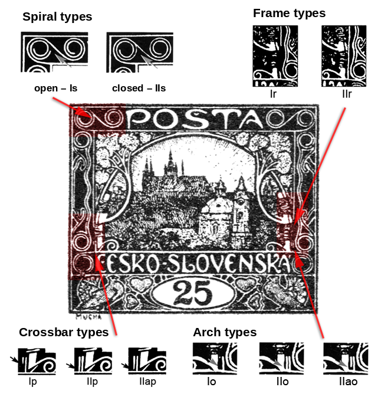

Typy páté kresbyFifth-design types
Pátou kresbu katalog charakterizuje jako velký bílý nápis na barevném podkladu, bez keře a slunce, s větší kresbou chrámu svatého Mikuláše a odlišným ornamentem v orámování obrazu. Z mého pohledu je sběratelsky nejzajímavější: většina hodnot, u kterých byla použita, má na různých známkových polích různé kombinace typů několika objektů kresby.The catalogue describes the fifth design as a large white inscription on a coloured ground, without bush or sun, with a larger drawing of St Nicholas’s church and a different ornament in the frame. To my mind it is the most rewarding to collect: on most of the values that used it, different fields carry different combinations of types of several elements of the design.
Typy se dělí do čtyř kategorií:The types fall into four categories:
- Spirálové typySpiral types
- Příčkové typyCrossbar types
- Obloukové typyArch types
- Rámečkové typyFrame types
Kliknutím na jednotlivé typy se dostanete k jejich popisu i k zobrazení odpovídajících známkových polí. Kde se který objekt v kresbě nachází, ukazuje následující schéma:Clicking a type leads to its description and to the corresponding stamp fields. Where each element sits within the design is shown in the diagram below:

Pro hodnotu 15h je zpracování podrobnější — se seznamem polí po deskách — na stránce Typy páté kresby na 15h.For the 15h the treatment is fuller — with the fields listed plate by plate — on the Fifth-design types on the 15h page.